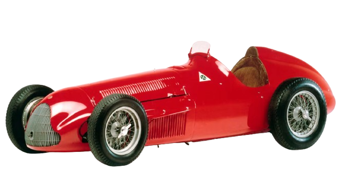

The 1950s: Birth of Formula 1
Formula 1 (F1) was officially established in 1950 as the highest level of single-seater motorsport. The first-ever World Championship race took place at Silverstone, UK, on May 13, 1950, and was won by Giuseppe Farina driving an Alfa Romeo 158 .driving an Alfa Romeo 158. Farina went on to win the first championship, but it was Juan Manuel Fangio who dominated the decade, winning five titles. Cars in this era were front-engined, with little regard for aerodynamics or driver safety. Drivers raced without seatbelts, and fatal crashes were tragically common.
